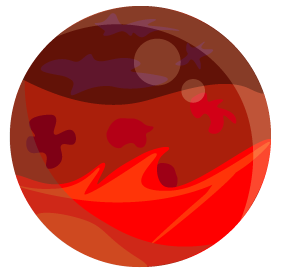
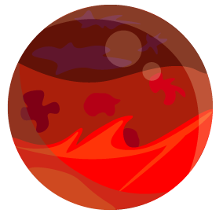
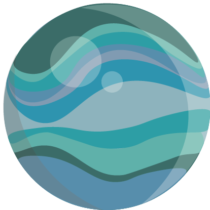
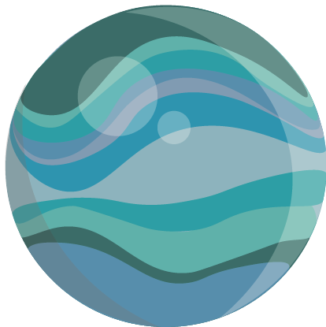

 

Mercúrio, que está diretamente conectado ao poder da comunicação, tem como homenagem o dia de quarta-feira. Esse é sempre o momento ideal para se focar nos estudos, em um aprendizado rápido e em pesquisas que precisam de foco extremo para serem efetuadas. O planeta vai sempre favorecer questões que estão diretamente relacionadas ao poder da concentração, questões ligadas ao raciocínio e a trabalhos que solicitem uma grande capacidade intelectual.
Com uma temperatura que varia entre 427ºC e -137ºC, mercúrio é o planeta que possui a maior amplitude térmica (variação de temperatura) do sistema solar, cerca de 600ºC.